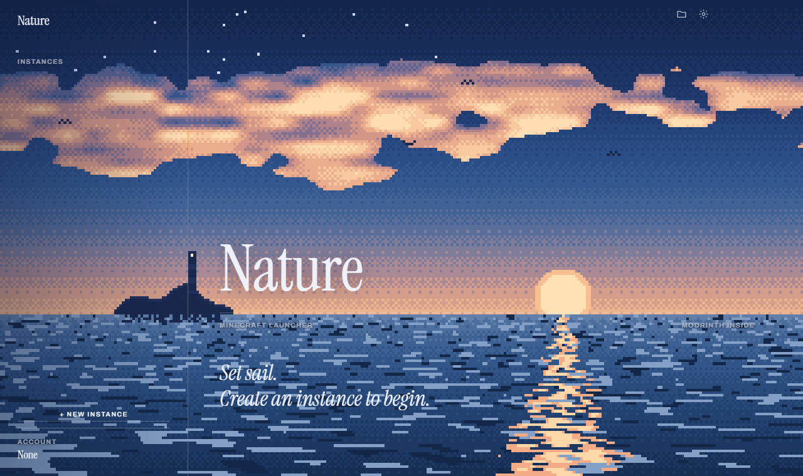

Every version, every loader, one quiet harbour.
A small installer that fetches the latest launcher. Updates install themselves. On Linux? One command.

Make separate instances for each way you play, then manage mods, packs and shaders without ever opening a file explorer.
Vanilla, Fabric, Quilt, Forge and NeoForge, for every release back to 1.8.9 and beyond. Each instance keeps its own worlds, mods and settings.
Search mods, resource packs and shaders filtered to your instance's version and loader. Required dependencies install automatically.
Pick any Modrinth modpack and version, or import a .mrpack file, and get a ready-to-play instance.
Turn mods, resource packs and shaders on or off, delete them, or drag files straight into the window.
One button checks every mod, resource pack and shader against Modrinth, even ones you added by hand.
The right Java runtime downloads for each version: Java 8 for 1.8.9, Java 21 for modern releases, and so on.
Point it at a version .json and .jar to play clients and versions that aren't on the official list.
Sign in with your Microsoft account, or add an offline name for testing and singleplayer.
No admin rights needed. Everything installs for your Windows account only.
Paste this into a terminal. It installs for your user only (no sudo) and adds Nature Launcher to your app menu. Run it again any time to update; the launcher also updates itself.
curl -fsSL https://raw.githubusercontent.com/avadrinkssprite/nature-launcher/main/install.sh | bashWhen a new version is out, the launcher asks if you want it. Say yes and it closes, updates in a few seconds and opens again. Your instances, worlds and settings are never touched.
Yes. Nature Launcher is free and its code is on GitHub. You still need to own Minecraft to play online.
In %APPDATA%\nature-launcher. Each instance is a folder under instances with its own saves, mods, resourcepacks and shaderpacks. The Folder button in the launcher opens it for you.
Windows SmartScreen warns about apps that aren't code-signed, which costs money every year. Click More info, then Run anyway. You can read exactly what the installer does in installer/Setup.cs on GitHub.
Open Windows Settings → Apps → Installed apps, find Nature Launcher and choose Uninstall. Your instances and worlds stay in %APPDATA%\nature-launcher unless you delete that folder yourself.
Linux, yes: x64 and ARM64, using the one-line install above. Your instances live in ~/.config/nature-launcher. To remove it, run the same command with bash -s -- --uninstall at the end. Mac isn't supported yet.